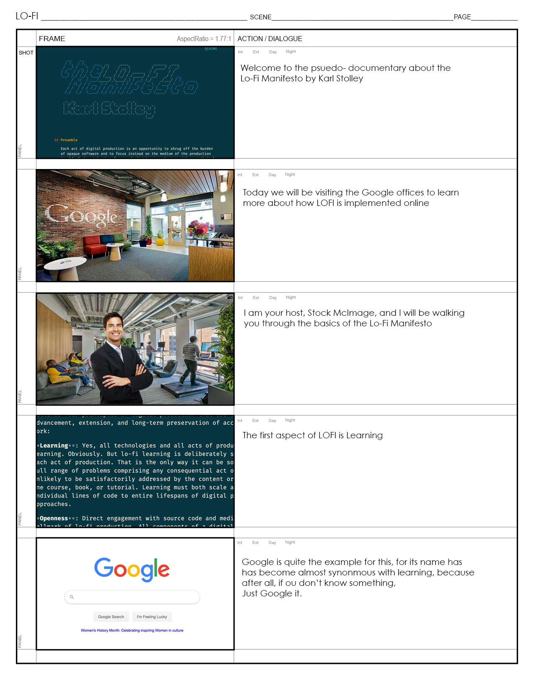
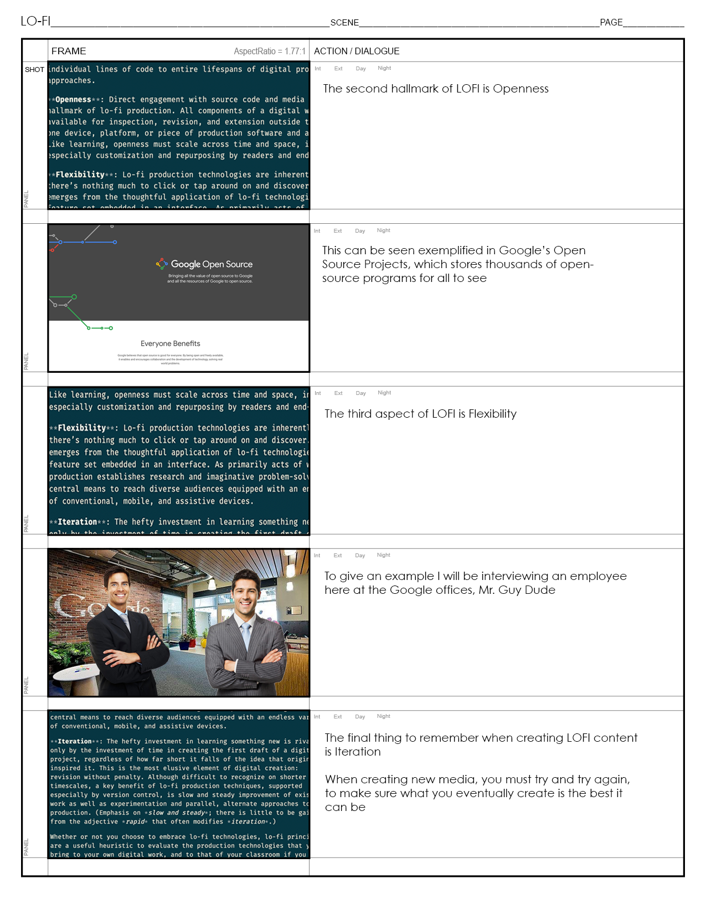

Psuedo Documentary Storyboard
In this assignment we were given the task of creating a storyboard for a fake documentary, choosing from a list of options to focus the documentary on, from what we had discussed in class so far this semester. I chose to focus my documentary on the Lo-Fi Manifesto.

